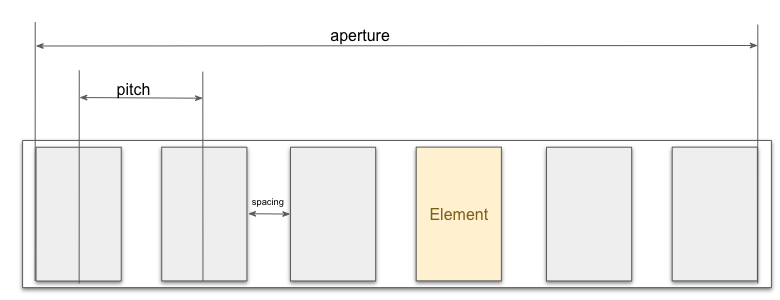
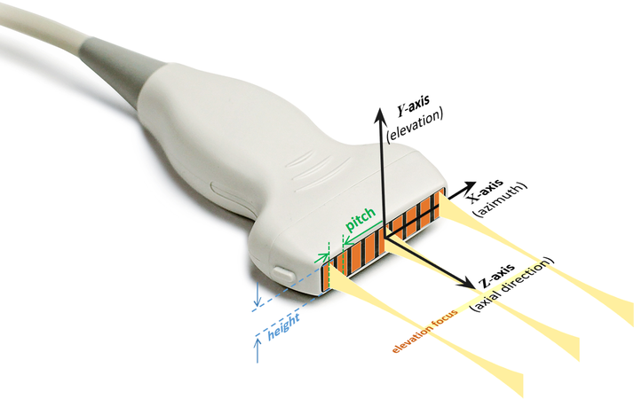
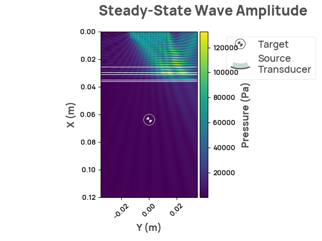
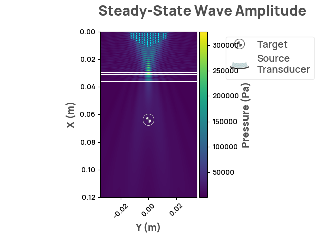
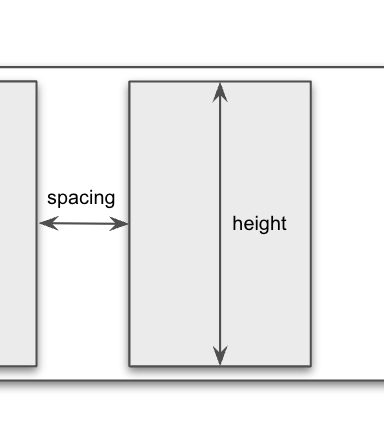
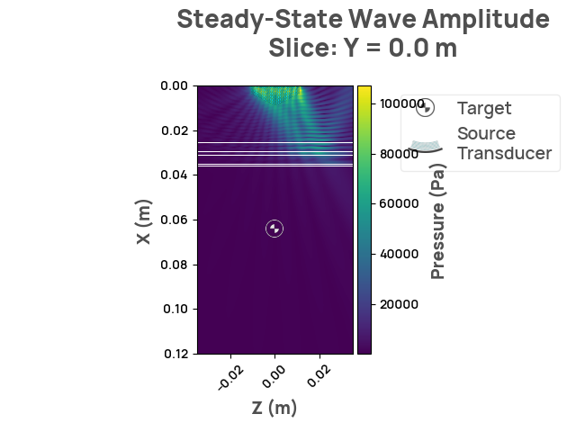

Note
Click here to download the full example code
Phased array source
Phased arrays consist of multiple individual transducer elements arranged in a specific pattern, such as a linear or circle. Each element can be controlled independently, allowing for precise manipulation of the generated ultrasound waves. By adjusting the timing or phase of the signals sent to these elements, the ultrasound waves can be focused, steered, and shaped without mechanically moving the transducer.
They are becoming increasingly popular in the field of transcranial ultrasound stimulation as they offer several advantages over traditional ultrasound transducers -- among others are precise targeting and better control over steering and shaping:
-
Precise targeting: as individual transducer elements can be individually controlled, it allows for the generation of a focused ultrasound beam with high spatial accuracy. This enables the stimulation of specific brain regions without affecting the surrounding healthy tissue and minimizes the risk of potential side effects.
-
Steering and shaping: The phased array technology allows the ultrasound beam to be electronically steered and shaped in real-time without mechanically moving the transducers. This enables targeting of different brain regions or adjusting the stimulation pattern as needed during a session, making the procedure more versatile and adaptable.
These features allow the stimulation to be tailored to suit to more specific requirements. With ongoing research and development, they have the potential to revolutionize the field of brain stimulation and offer new treatment options for a range of neurological and psychiatric disorders.
This notebook will show how to define a phased array within NDK and experiment with some of the available features. For more details, checkout the NDK documentation.
Phased Arrays Components
- Elements: A phased array consists of multiple transducer elements that can be individually controlled in terms of phase.
- Pitch: The pitch of a phased array refers to the distance between adjacent transducer elements, and affects the resolution of the array.
- Spacing: The spacing between transducer elements affects the width and shape of the ultrasound beam that is produced.
- Aperture: The aperture of a phased array refers to the total size of the array, and affects the power and focus of the ultrasound beam.
- Element width: The element width of a phased array refers to the size of each individual transducer element. Wider elements generally result in a more powerful and focused beam, while narrower elements can increase the resolution of the array.
- Tilt angle: The tilt angle of a phased array refers to the angle at which the ultrasound beam is directed relative to the normal of plane of the array. Tilt angle can be adjusted by controlling the phase (delays) of the individual transducer elements.

The image above shows a schematic representation of a phased array.

The image above shows the axis definition and the look of a phased array in the real world. Image source link.
Below we will go through some examples of how to use the NDK to API to simulate Phased Arrays in the most common settings. Examples we will cover:
- Setting up a tilted wavefront
- Focusing phased arrays
- Setting up custom delays per element
- Phased arrays in 3D
Phased Array NDK API
A PhasedArraySource receives the following parameters:
- position
(npt.NDArray[np.float_]): a numpy float array indicating the coordinates (in meters) of the point at the center of the source, which is the point that bisects the line segment source. - direction
(npt.NDArray[np.float_]): a numpy float array representing a vector located at position that is perpendicular to the plane of the source. Only the orientation ofdirectionaffects the source, the length of the vector has no affect. See theunit_directionproperty. - num_points
(int): the number of point sources to use when simulating the source. - num_elements
(int): the number of elements of the phased array. - pitch
(float): the distance (in meters) between the centers of neighboring elements in the phased array. - element_width
(float): the width (in meters) of each individual element of the array. - tilt_angle
(float): the desired tilt angle (in degrees) of the wavefront. The angle is measured between the direction the wavefront travels and the normal to the surface of the transducer, with positive angles resulting in a counter-clockwise tilt away from the normal. - focal_length
(float): the distance (in meters) frompositionto the focal point. - delay
(float, optional): the delay (in seconds) that the source will wait before emitting. - element_delays: an 1D array with the delays (in seconds) for each element of the
phased array. Delays from
element_delaystake precedence; No other argument affected the delays (tilt_angle,focal_lengthordelay) would be considered. ValueError will be raised if provided values for eithertilt_angle,focal_lengthordelayare non-default.
Tilting the Wavefront
Tilting the wavefront can be achieved simply by setting the tilt_angle
argument different than zero. Positive angles result in counter-clockwise rotations.
import numpy as np
import neurotechdevkit as ndk
# define the source
source = ndk.sources.PhasedArraySource2D(
position=[0.0, 0.0],
direction=[1.0, 0.0],
num_elements=20,
pitch=1.5e-3,
element_width=1.2e-3,
tilt_angle=30,
num_points=1000,
)
scenario = ndk.scenarios.built_in.Scenario1_2D()
scenario.sources = [source]
scenario.make_grid()
scenario.compile_problem()
result = scenario.simulate_steady_state()
assert isinstance(result, ndk.results.SteadyStateResult2D)
result.render_steady_state_amplitudes()

Out:
Estimated time to complete simulation: 46 seconds. Memory required is 8.11064033080535 GB (available 74.152890368 GB). These values are approximated.
/home/circleci/.cache/pypoetry/virtualenvs/neurotechdevkit-3aSsmiER-py3.10/lib/python3.10/site-packages/devito/finite_differences/differentiable.py:224: DeprecationWarning: NotImplemented should not be used in a boolean context
return super(Differentiable, self).__eq__(other) and\
/home/circleci/.cache/pypoetry/virtualenvs/neurotechdevkit-3aSsmiER-py3.10/lib/python3.10/site-packages/devito/finite_differences/differentiable.py:224: DeprecationWarning: NotImplemented should not be used in a boolean context
return super(Differentiable, self).__eq__(other) and\
gcc -O3 -g -fPIC -Wall -std=c99 -march=native -Wno-unused-result -Wno-unused-variable -Wno-unused-but-set-variable -ffast-math -shared -fopenmp /tmp/devito-jitcache-uid1001/cca4a12a3521ab1de2785369917754e4dc60ea90.c -lm -o /tmp/devito-jitcache-uid1001/cca4a12a3521ab1de2785369917754e4dc60ea90.so
Focusing
Similarly, a phased array can be focused by applying delays in a specific way. Such
delays are automatically computed when focal_length is defined. Let's explore how
the API looks like:
scenario = ndk.scenarios.built_in.Scenario1_2D()
phased_array = ndk.sources.PhasedArraySource2D(
position=[0.0, 0.0],
direction=[1.0, 0.0],
num_elements=20,
pitch=1.5e-3,
element_width=1.2e-3,
focal_length=0.03,
num_points=1000,
)
scenario.sources = [phased_array]
print(f"Focal point is: {phased_array.focal_point}")
Out:
focal_point shows the coordinates (in meters) where the array focuses.
scenario.make_grid()
scenario.compile_problem()
result = scenario.simulate_steady_state()
assert isinstance(result, ndk.results.SteadyStateResult2D)
result.render_steady_state_amplitudes()

Out:
Estimated time to complete simulation: 47 seconds. Memory required is 8.110192292329451 GB (available 74.152890368 GB). These values are approximated.
/home/circleci/.cache/pypoetry/virtualenvs/neurotechdevkit-3aSsmiER-py3.10/lib/python3.10/site-packages/devito/finite_differences/differentiable.py:224: DeprecationWarning: NotImplemented should not be used in a boolean context
return super(Differentiable, self).__eq__(other) and\
/home/circleci/.cache/pypoetry/virtualenvs/neurotechdevkit-3aSsmiER-py3.10/lib/python3.10/site-packages/devito/finite_differences/differentiable.py:224: DeprecationWarning: NotImplemented should not be used in a boolean context
return super(Differentiable, self).__eq__(other) and\
gcc -O3 -g -fPIC -Wall -std=c99 -march=native -Wno-unused-result -Wno-unused-variable -Wno-unused-but-set-variable -ffast-math -shared -fopenmp /tmp/devito-jitcache-uid1001/fd8f46a495b0020134ca229700238e7d1d852637.c -lm -o /tmp/devito-jitcache-uid1001/fd8f46a495b0020134ca229700238e7d1d852637.so
We can see that the arrays focuses at a distance equal to focal_length.
Custom Wavefront Shapes
In the examples shown so far we specified high level arguments and the required delays were automatically computed. The NDK API offers also the possibility to specify delays directly to create arbitrary wavefront shapes.
In the example below we apply monotonically increasing delays to mimic a counter-clockwise angle.
scenario = ndk.scenarios.built_in.Scenario1_2D()
phased_array = ndk.sources.PhasedArraySource2D(
position=[0.0, 0.0],
direction=[1.0, 0.0],
num_elements=20,
pitch=1.5e-3,
element_width=1.2e-3,
element_delays=np.linspace(0, 1e-5, 20),
num_points=1000,
)
scenario.sources = [phased_array]
scenario.make_grid()
scenario.compile_problem()
result = scenario.simulate_steady_state()
assert isinstance(result, ndk.results.SteadyStateResult2D)
result.render_steady_state_amplitudes()
Out:
Estimated time to complete simulation: 46 seconds. Memory required is 8.110670878883253 GB (available 74.152890368 GB). These values are approximated.
/home/circleci/.cache/pypoetry/virtualenvs/neurotechdevkit-3aSsmiER-py3.10/lib/python3.10/site-packages/devito/finite_differences/differentiable.py:224: DeprecationWarning: NotImplemented should not be used in a boolean context
return super(Differentiable, self).__eq__(other) and\
/home/circleci/.cache/pypoetry/virtualenvs/neurotechdevkit-3aSsmiER-py3.10/lib/python3.10/site-packages/devito/finite_differences/differentiable.py:224: DeprecationWarning: NotImplemented should not be used in a boolean context
return super(Differentiable, self).__eq__(other) and\
gcc -O3 -g -fPIC -Wall -std=c99 -march=native -Wno-unused-result -Wno-unused-variable -Wno-unused-but-set-variable -ffast-math -shared -fopenmp /tmp/devito-jitcache-uid1001/0055a1babbb73e4e30c2b5026d34deb4bcb07a18.c -lm -o /tmp/devito-jitcache-uid1001/0055a1babbb73e4e30c2b5026d34deb4bcb07a18.so
Phased Arrays In Three Dimensions
There are two extra details to consider when creating 3D phased array sources:
the height of the elements and the position of the center_line.
- Height: Is the distance (in meters) of the element measured in a straight line
perpendicular to the
element_width(see image below) - Center line: As the name indicates, is the line that crosses the centers of the elements. Must be orthogonal to the direction line.

The rest of the API is identical for both 2D and 3D scenarios.
scenario_3d = ndk.scenarios.built_in.Scenario1_3D()
phased_3d = ndk.sources.PhasedArraySource3D(
position=[0.0, 0.0, 0.0],
direction=[1.0, 0.0, 0.0],
center_line=np.array([0.0, 0.0, 1.0]),
num_points=20_000,
num_elements=16,
pitch=1.5e-3,
element_width=1.2e-3,
tilt_angle=30,
height=5.0e-3,
)
scenario_3d.sources = [phased_3d]
scenario_3d.make_grid()
scenario_3d.compile_problem()
results = scenario_3d.simulate_steady_state()
assert isinstance(results, ndk.results.SteadyStateResult3D)
results.render_steady_state_amplitudes()

Out:
Estimated time to complete simulation: 17 minutes. Memory required is 10.12265384241533 GB (available 74.152890368 GB). These values are approximated.
/home/circleci/.cache/pypoetry/virtualenvs/neurotechdevkit-3aSsmiER-py3.10/lib/python3.10/site-packages/devito/finite_differences/differentiable.py:224: DeprecationWarning: NotImplemented should not be used in a boolean context
return super(Differentiable, self).__eq__(other) and\
/home/circleci/.cache/pypoetry/virtualenvs/neurotechdevkit-3aSsmiER-py3.10/lib/python3.10/site-packages/devito/finite_differences/differentiable.py:224: DeprecationWarning: NotImplemented should not be used in a boolean context
return super(Differentiable, self).__eq__(other) and\
gcc -O3 -g -fPIC -Wall -std=c99 -march=native -Wno-unused-result -Wno-unused-variable -Wno-unused-but-set-variable -ffast-math -shared -fopenmp /tmp/devito-jitcache-uid1001/36788220aacf20ede390405a475fe425008c3199.c -lm -o /tmp/devito-jitcache-uid1001/36788220aacf20ede390405a475fe425008c3199.so
Total running time of the script: ( 7 minutes 22.362 seconds)
Download Python source code: plot_phased_array_source.py